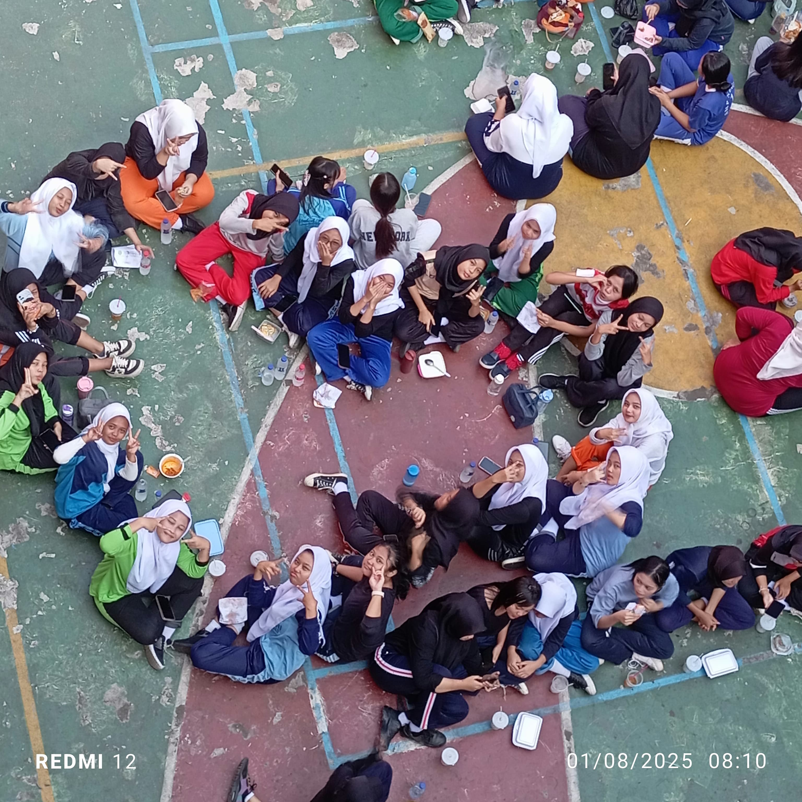
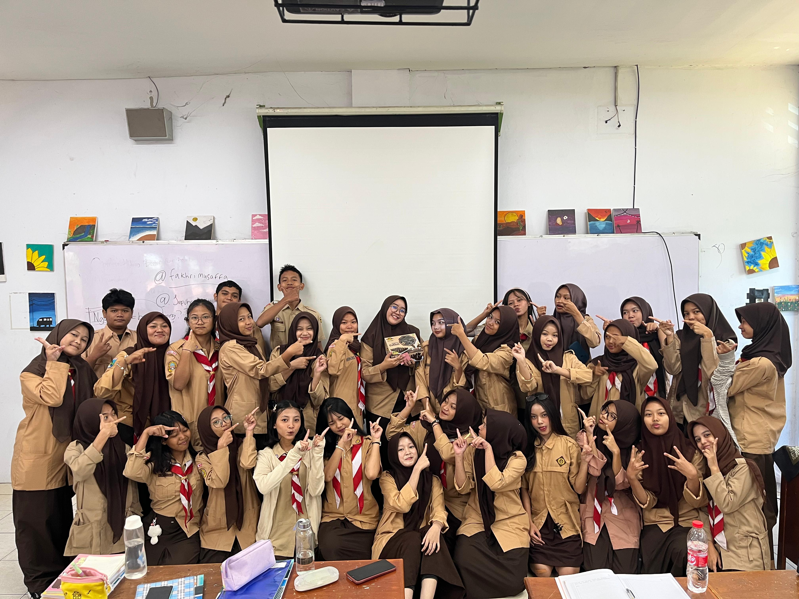
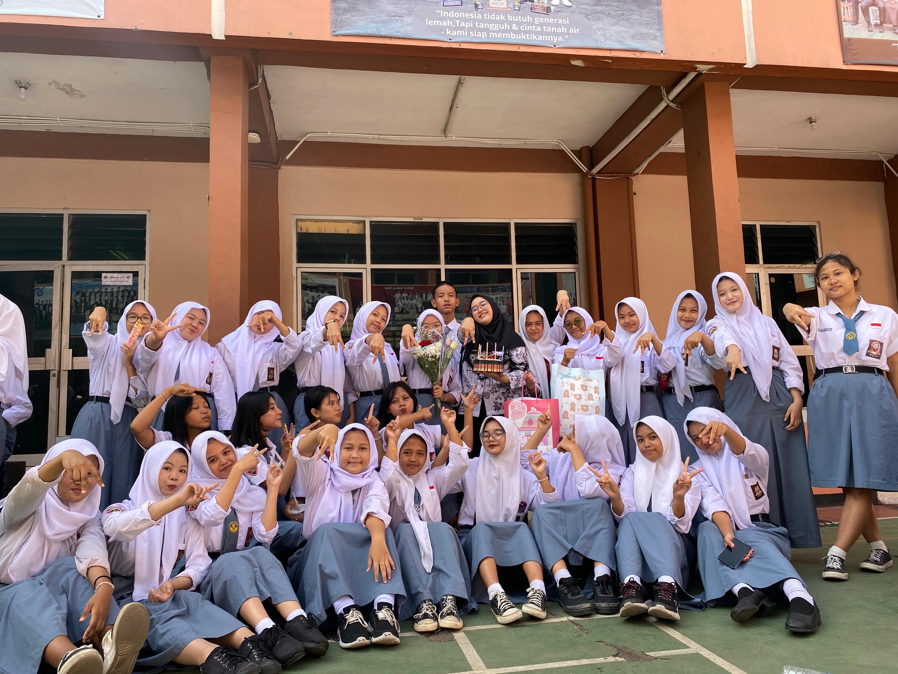
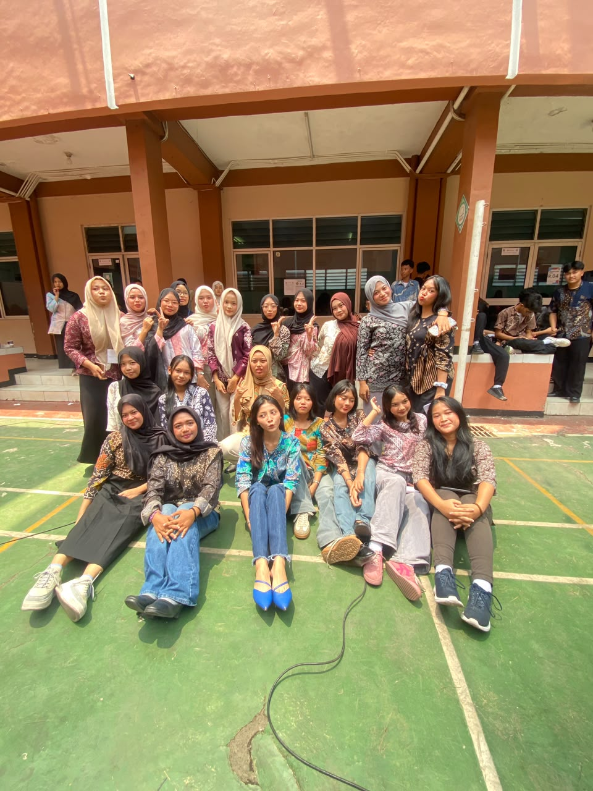

dua tahun, satu cerita.
Dua tahun mungkin terdengar sebentar, tapi di dalamnya ada banyak cerita yang pernah kita lewati bersama.
Beberapa momen mungkin hanya berlangsung sebentar, tapi ketika diabadikan, semuanya bisa menjadi bagian dari cerita yang panjang.




Dua tahun lalu, kita mungkin belum tahu bakal sejauh apa perjalanan kelas ini berjalan.
Dari hari-hari biasa di kelas, tugas yang datang silih berganti, sampai momen-momen kecil yang akhirnya jadi kenangan.
Mungkin kita nggak sadar, tapi selama dua tahun ini banyak hal yang berubah.
Orang-orangnya, kebiasaannya, cara kita melihat satu sama lain, sampai cara kita menghadapi setiap hari di kelas.
Mungkin ada momen yang terlihat sederhana, tapi justru hal-hal kecil seperti itulah yang paling lama kita ingat.
Tawa di tengah pelajaran, obrolan sebelum kelas dimulai, tugas yang dikerjakan bersama, dan kejadian-kejadian kecil yang mungkin sekarang terasa biasa.
Pada akhirnya, sebuah kelas bukan hanya tentang ruangan, jadwal pelajaran, atau daftar nama.
Ada orang-orang di dalamnya. Ada cerita, pertemanan, perbedaan, kesalahpahaman, kebersamaan, dan banyak hal lain yang membuat dua tahun ini punya arti tersendiri.
Entah nanti kita akan berada di mana, semoga ketika melihat kembali halaman ini, kita masih bisa tersenyum mengingat semua cerita yang pernah kita lewati bersama.